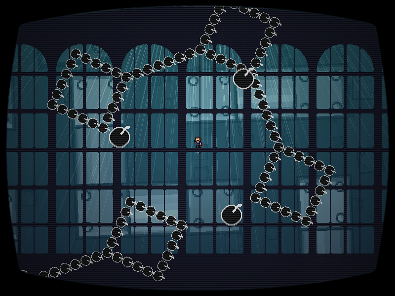

chapter7 - section3

| creator | segment | label | jump |
|---|---|---|---|
| yuzuyu(main) NN(supervise) |
1:32.98~1:37.30 | R/Q | infinite |
迷路を題材とした弾幕です。
7-1より存在している迷路および迷路状弾幕に関して、これらがそれぞれ反対方向に90°ずつ傾いた状態で影を追跡することを目的としています。
1:32.98において、迷路状弾幕が回転する際（fig.7-3.1）、その中心がプレイヤーではなく1:32.98の時点でプレイヤーが滞在しているブロックの中心であるという点に注意が必要です。
回転に巻き込まれないようにするために、迷路状弾幕が回転している最中はブロックの中央に留まることを意識することで攻略がしやすくなるかもしれません。